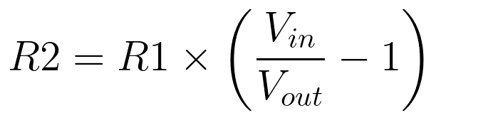
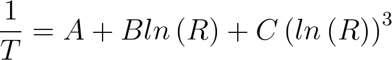
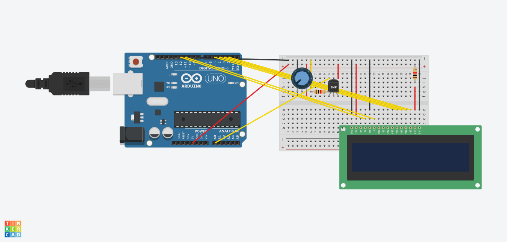
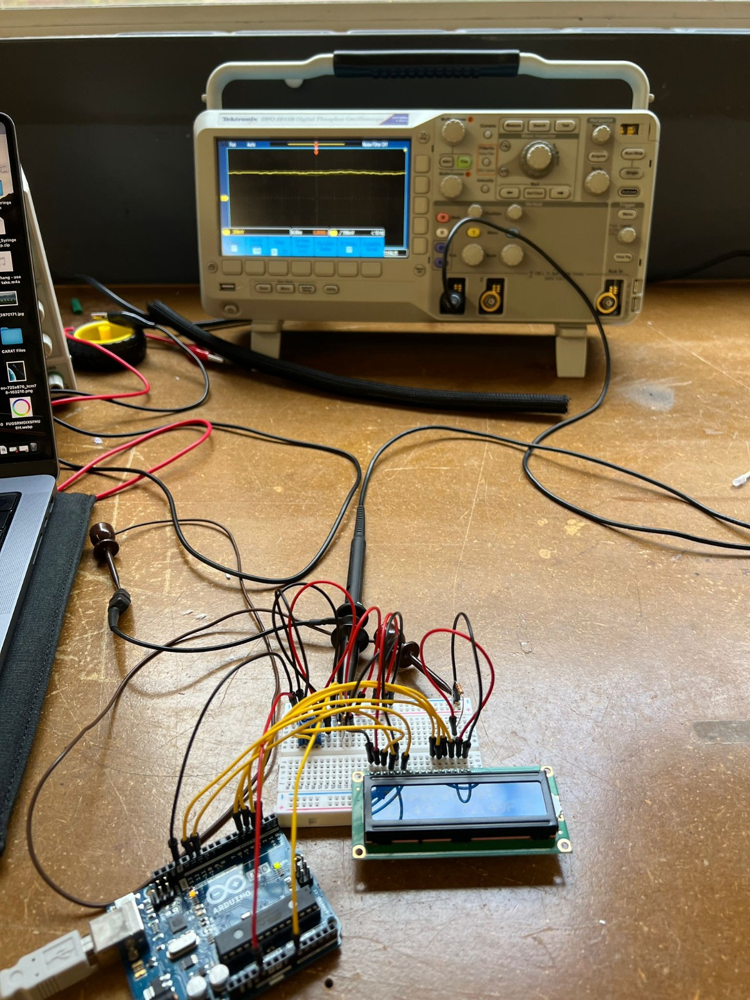
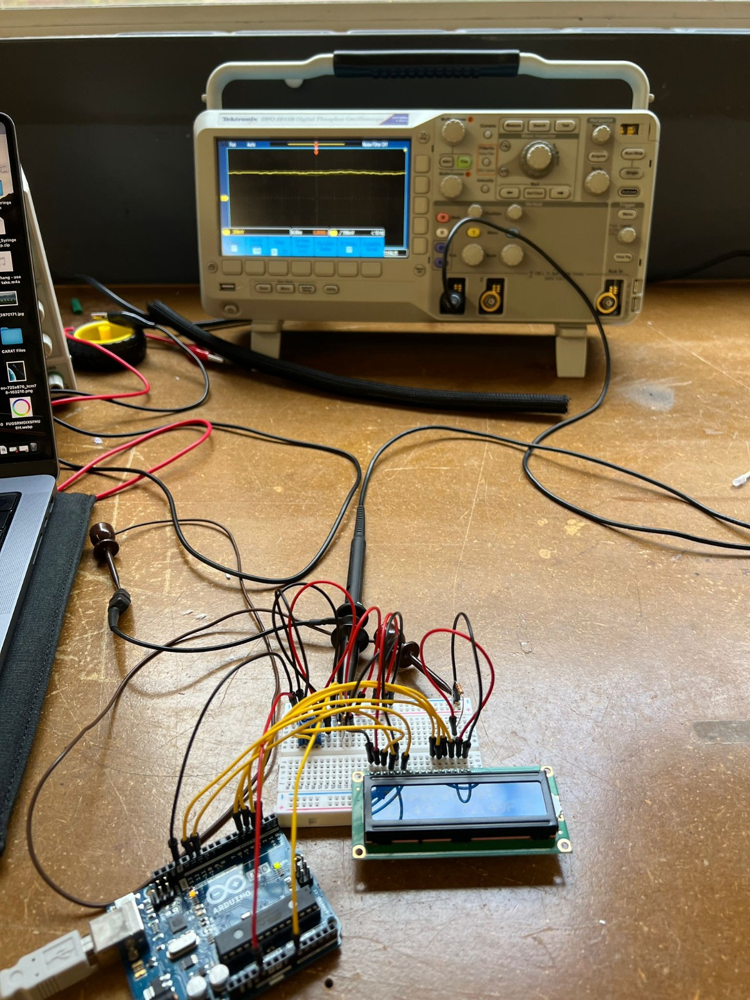

Week 7: Electronic Output Devices
From LEDs to LCDs
Before deciding on my personal task for the week, I wanted to try out the LED strip and singular RGB LED. For both options, the example code was very straightforward. I used the four-legged RGB LED, in which each channel shares a common cathode that connected to ground. I set up the circuit with 1K ohm resistors for the red, green, and blue channels. I also hadn't used an LCD screen yet, so I adjusted code to print a "hello, world" example. I used a potentiometer to adjust the brightness of the screen. Since these were simple exercises, I didn't focus on removing the delay function from the code structure. However, the LCD code utilizes millis() to print the amount of time that has passed since the screen was initialized.


RBG LED Arduino Code
void setup() {
pinMode(9, OUTPUT); // red
pinMode(10, OUTPUT); // green
pinMode(11, OUTPUT); // blue
}
oid loop() {
digitalWrite(9, HIGH); // turn on red channel
delay(500); // delay
digitalWrite(10, HIGH); // turn on green channel
delay(500); // delay
digitalWrite(11, HIGH); // turn on green channel
delay(500); // delay
digitalWrite(9, LOW); // turn off red channel
digitalWrite(10, LOW); // turn off green channel
digitalWrite(11, LOW); // turn off blue channel
delay(3000); // delay
}
LCD Screen Code
// include the library code:
#include < LiquidCrystal.h >
// initialize the library by associating any needed LCD interface pin
// with the arduino pin number it is connected to
const int rs = 12, en = 11, d4 = 5, d5 = 4, d6 = 3, d7 = 2;
LiquidCrystal lcd(rs, en, d4, d5, d6, d7);
void setup() {
// set up the LCD's number of columns and rows:
lcd.begin(16, 2);
// Print a message to the LCD.
lcd.print("hello, world!");
}
void loop() {
// set the cursor to column 0, line 1
// (note: line 1 is the second row, since counting begins with 0):
lcd.setCursor(0, 1);
// print the number of seconds since reset:
lcd.print(millis() / 1000);
}
Taking the Temperature (Thermistor)
Felicia and I are planning to make a drawing/painting machine for our final project, so we've been brainstorming
what input devices we will use to control the speed, direction, and intensity of the machine's gesture. Since we're
interested in climate change and leveraging climate data to inspire action through participatory art, I thought I would
try to use the thermistor and export its measurements onto an LCD screen.
How does a thermistor work? It records temperature by a change in electrical resistance, since
the analog pin of an Arduino can only measure voltage directly. A voltage divider is typically used to calculate resistance
and convert it to apparent temeprature - this is done by taking a measurement between the thermistor and a knwon resistor. As such, you will see that the code block uses
multiple equations to calculate the temperature in both Celsius and Fahrenheit.
Voltage divider equation (gets thermistor resistance)
Steinhart–Hart equation (calculates temperature)
Input > Output Tests
Before connecting to the LCD screen, I tested the thermistor on its own. Nathan provided me with a 10K ohm thermistor, which then requires using a 10K ohm resistor. When I was using an older thermistor, it wasn't obvious what its resistance was. It was interesting to see how using resistors of differing strengths increased or decreased the output temperature readings by magnitudes of 10 to 100. Once I got access to a new thermistor and the LCD screen, I read up on how the LCD screen actually works. I used a 16x2 LCD (liquid crystal display), which requires an additional Arduino library. Among the 16 pins, these are most important:
- A register select (RS) pin that selects the LCD's memory,
- A read/write (RW) pin that selects read or write mode,
- 8 data pins (D0-D7) and high/low states that inform the read/write
It certainly isn't 200.75 degrees F in the Science Center!

Heating up from my body temperature.
Oscilloscope Trial & Error
Although I used the oscilloscope with my thermistor-LCD circuit setup, I'm not sure that I got it to work correctly. As a lab class, we were having some issues getting a clear reading from any circuit. For my particular case, I attached the ground probe to my ground wire and the power probe to my data pin for the thermistor. I had trouble adjusting the scale to get a clear reading, but decided to record this zoom level and report my findings, even if they're incorrect. What you see here is a reading at less than 10Hz frequency, the CH1 reads 200mV, which I believe is volt per division, 336mV is the trigger level, and either 4.00ms or 0.00000s is the time per division. It is my hypothesis that the frequency changes are very small because the thermistor is constantly reading voltage, as opposed to, say, using a blinking LED and watching it transition from OV to 5V at the prescribed delay intervals. 
 

Main Arduino File
I tried adjusting the code from the tutorial I found online to include class constructors and a timer rather than the delay function. Since Liquid Crysal is already a class, I included a new class for the Thermistor and a new class for the timer.
#include
#include 'Thermistor.h'
#include 'Timer.h'
// initialize the library with the numbers of the interface pins
LiquidCrystal lcd(12, 11, 5, 4, 3, 2);
// create instance of thermistor
int thermistorPin = 0;
Thermistor Thermistor(thermistorPin);
Timer Timer();
void setup() {
// do not need this when we use the class constructors
}
void loop() {
// start timer
timer.startTimer(1000);
// when timer is ready
if (timer.isTimerReady(){
// start thermistor reading
Thermistor.recordTemp();
// transfer thermistor reading to LCD screen
lcd.print("Temperature: ");
lcd.setCursor(0,1);
lcd.print(Tc);
lcd.print("C ");
lcd.print(Tf);
lcd.print("F ");
})
};
Thermistor Class
#ifndef _THERMISTOR_H_
#define _THERMISTOR_H_
// initiate the class
class Thermistor {
// define variables to be used
int Vo;
float R1 = 1000; // Resistor Value (We use 1 KOhms Resistor)
float logR2, R2, T, Tc, Tf;
float A = 1.009249522e-03, B = 2.378405444e-04, C = 2.019202697e-07;
public:
// create instance of the thermistor object
Thermistor(int thermistorPin){
thermistorPin = thermistorPin;
}
// initiate a constructor with variable parameters
void recordTemp(Vo, R1, logR2, R2, T, Tc, Tf){
Vo = analogRead(thermistorPin);
R2 = R1 * (1023.0 / (float)Vo - 1.0);
logR2 = log(R2);
T = (1.0 / (A + B*logR2 + C*logR2*logR2*logR2));
Tc = T - 273.15;
Tf = (Tc * 9.0)/ 5.0 + 32.0;
return Tc, TF;
}
};
#endif // _THERMISTOR_H_
Timer Class
#ifndef _TIMER_H_
#define _TIMER_H_
class Timer {
// define timer start time and target time
// use these values to intiate the loop
long timerStart = 0;
long timerTarget = 0;
public:
// function to begin the timer using millis()
void startTimer(int msec) {
timerStart = millis();
timerTarget = msec;
}
// determine whether the timer is ready
bool isTimerReady() {
return (millis() - timerStart) > timerTarget;
}
};
#endif // _TIMER_H_
CNC Miling & Molding Files
I prepared 2 files to practice milling a topographic map and milling a mold for casting objects. I will explain the files in more detail during next week's process update, but I'm embedding the STL files below. The first is a topographic map of Mount Kenya, which I exported from Terrain2STL, cleaned in blender, and extruded in Fusion360. The second is a little mushroom garden I've drawn all in Fusion360 and embedded in a box for easy casting/molding.